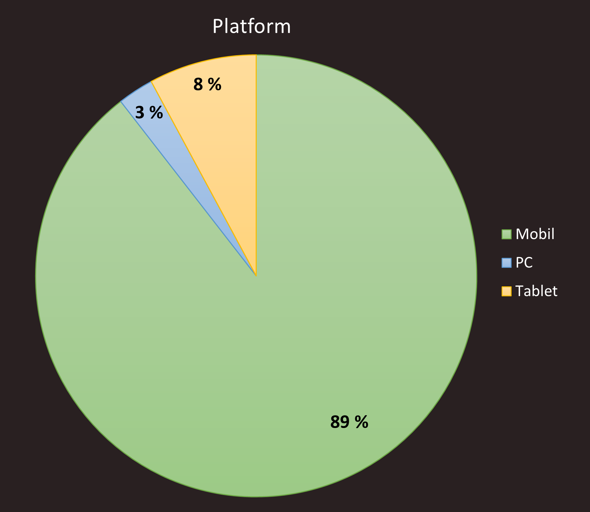
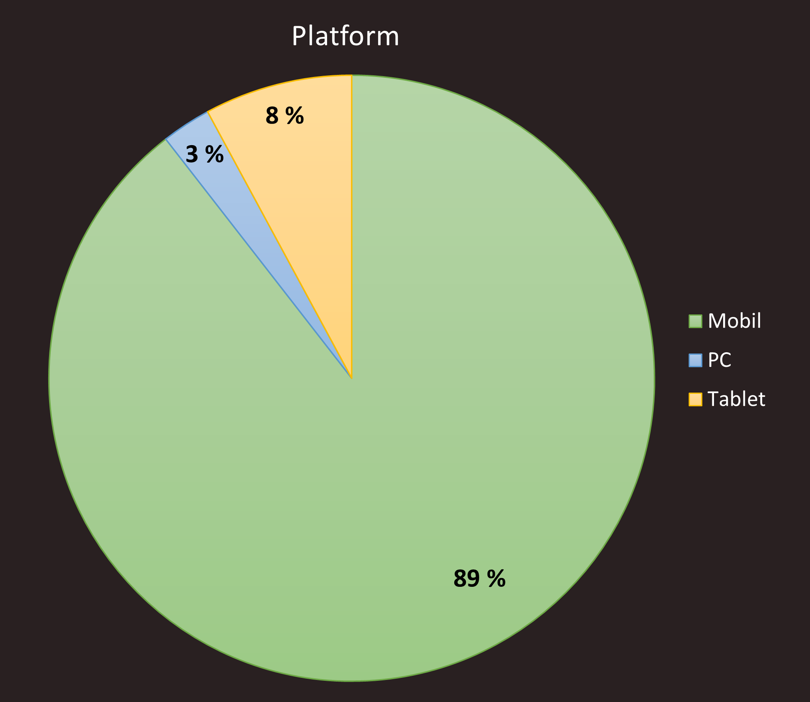

7. Vår tilbakemelding
Flere brukere kommenterte på at menyen vi hadde på forsiden var litt villedende, og det gjorde oss oppmerksom på at den manglet drikkekart for varme drikker. Hovedsiden hadde da med uhell mindre utvalg enn den faktiske meny-siden. For bruker ble det da forvirrende å vite hvilken meny som var korrekt. En løsning vi drøftet var å bare legge til manglende drikkekart, men vi diskuterte mer og ble enig om at menyen på hovedsiden var litt overflødig når vi har en egen meny-side. Noen ga også tilbakemelding om at det ble litt smør-på-flesk å ha meny på hovedsida når vi alt har en meny som er lett å finne fram til. Dessuten kommenterte noen på at de på hovedsida var litt små og vanskelig å lese. Vi bestemte oss derfor for å endre hele meny-delen til å heller vise bilder av noen utvalgte retter som det går an å klikke på – som derifra sender deg direkte til menysida.
Vi fikk en kommentar på åpningstiden som står presentert helt nederst på siden (footer). «Åpningstider: Noe forvirrende om 10-19 med stor skrift nederst på siden gjelder alle dager». Vi tok til oss dette og endret til «Åpent i dag» etterfulgt av klokkeslett. Det gjorde oss også oppmerksomme på at når det står «Stengt», står det fremdeles klokkeslett under som kan være forvirrende. Vi valgte å fjerne klokkeslett når javascript-funksjonen openingHours() vurderer kafeen som stengt.
Flere etterspurte prisliste på meny-sida, som er en god og forståelig tilbakemelding. Men der fikk vi ikke gjort noen endringer enda, da vi rett og slett ikke har fått prisliste fra klienten. Men detter absolutt noe som kan legges til i framtida, om klienten også syns det er ønskelig. Fra samtale med studass ble det dratt fram at det burde være enklere å se at menyene kan trykkes på for å få fram oversikten over utvalget. Vi valgte å gjøre dette ved å endre til en mørkere bakgrunnsfarge når man holder over de enkelte menyene, i tillegg til å få fram en musepeker (cursor: pointer).
Ellers fikk vi veldig hyggelige og positive tilbakemeldinger via Google forms. Designet fikk mye skryt og folk syns sida var enkel å navigere og finne fram på, samt oversiktlig. De fleste satt pris på det mørke temaet, og syns fargevalget var innbydende og koselig. En person kunne foretrukket en noe lysere side med flere farger, men her valgte vi å forholde oss til klientens ønske om mørke toner.
Vi fikk også tre stykker til å teste nettsida, mens en av oss fulgte med på dem, for å få mer informasjon om inntrykket deres utover spørreskjemaet. To av dem testet på PC og brukte Google Chrome og en testet på tablet (iPad) og brukte nettleser Safari. Grunnen til dette var at hovedandelen av de som fylte inn Google forms-skjemaet var mobilbrukere, så der hadde vi mesteparten av informasjon allerede.
Førsteinntrykket av de som testet var at de virket imponerte, og de var snare med å kommentere at nettsida så veldig fin og ryddig ut. De lekte litt rundt med å trykke rundt på siden og de dro spesielt fram at de likte designet på menysiden. De likte også konseptet med å bli videresendt til instagram ved å trykke på bildene på galleri-siden. De var også begeistret for at man kunne se posisjonen til kafeen i kartet. To av dem kommenterte på at det var noe rart mellom menyen på hovedsiden og faktisk på menyen, men syntes ikke å ha noe imot at det var begge steder så lenge det var samsvar mellom dem. En mente det burde komme tydeligere fram at det var snakk om i dag på åpningstiden i footer. Helhetlig syns de nettsida var fin, oversiktlig, lett å navigere og et direkte sitat om utseendet: «det var et veldig koselig og innbydende design».

Figur:

 
